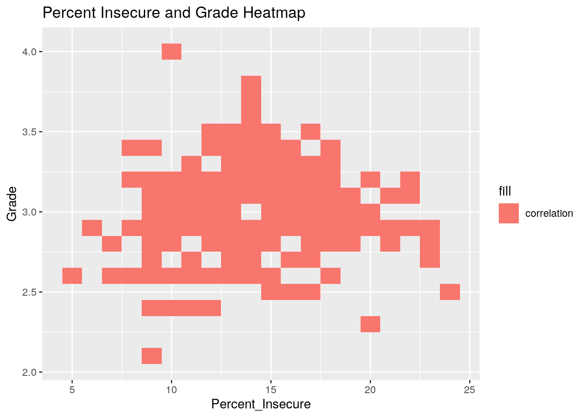
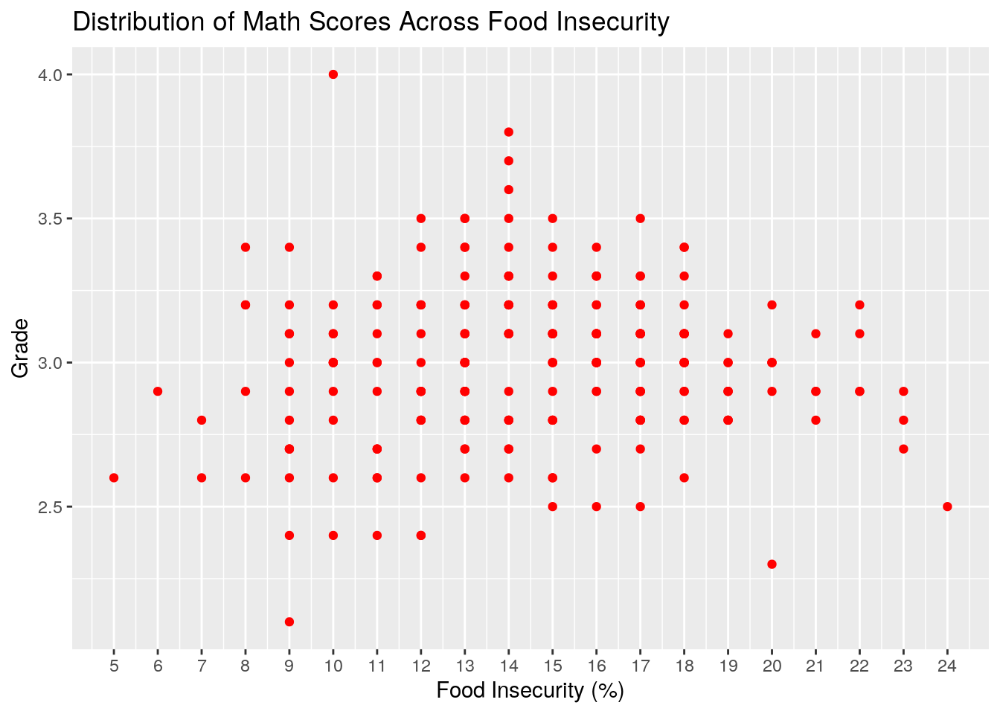
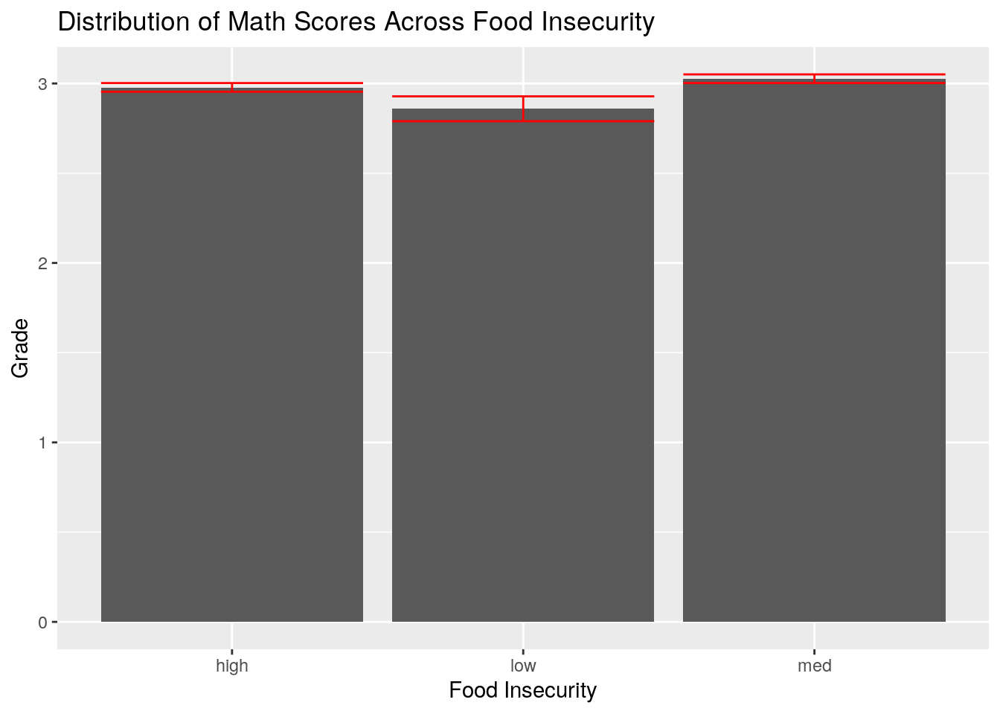
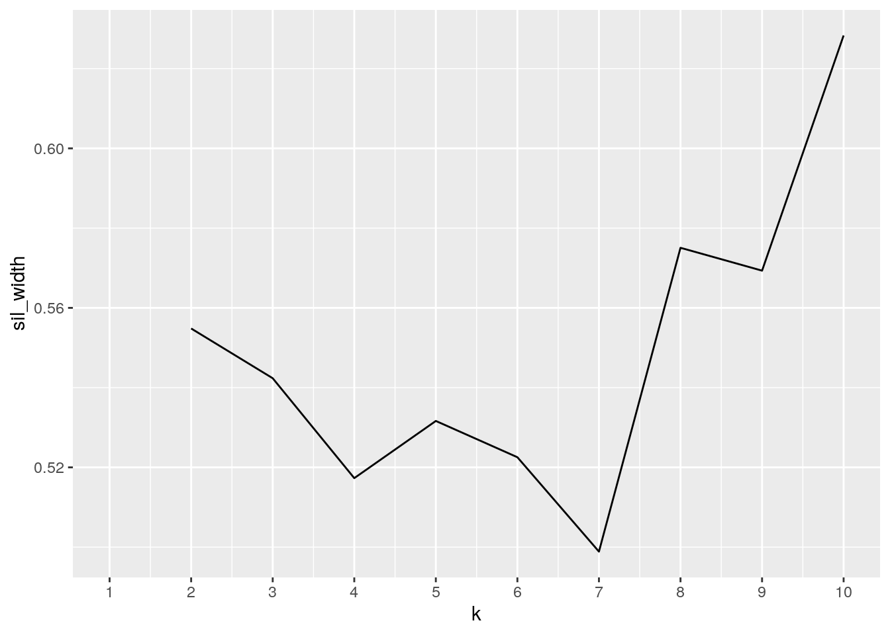
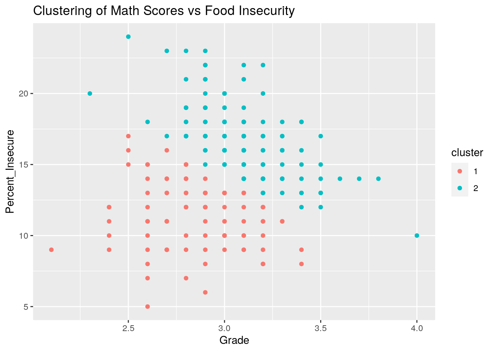

The data for this project was pulled from the County Health Rankings website. For each county, I looked at two factors.
First, I observed the verage grade level performance for 3rd graders on math standardized tests. This is the data set called “math”. If the third graders score a 3, they are performing at grade level. A score of 3.5 indicates that on average, the kids in that county are, on average, performing half a grade level better than expected for third graders. A score of 2.5 indicates average performance at half a grade level below what is expected.
I also looked at the variable food insecurity, both in raw numbers and percentage of the population experiencing it. The Core Food Insecurity Model used information provided by the Community Population Survey, Bureau of Labor Statistics, and American Community Survey. It looked at how many people experienced a lack of reliable access to food in the past year.
I chose this data because I thought that there could be a link between them. When students are well-fed and coming from a stable home environment, I hypothesise that they should be able to perform better in school, because their brains are nourished and they’re not stressed about their next meal.
library(tidyverse)
math <- read_csv("math.csv")
food <- read_csv("food.csv")
glimpse(math)## Rows: 255
## Columns: 2
## $ County <chr> "average", "Anderson", "Andrews", …
## $ `Average Grade Performance (Math)` <dbl> 3.1, 2.8, 2.6, 3.0, 2.7, 3.2, 3.3,…glimpse(food)## Rows: 255
## Columns: 3
## $ County <chr> "average", "Anderson", "Andrews", "Angelina", "Aran…
## $ `# Food Insecure` <dbl> 4217470, 10520, 1480, 16570, 4100, 1230, 250, 4210,…
## $ `% Food Insecure` <dbl> 15, 18, 8, 19, 17, 14, 13, 9, 15, 11, 15, 13, 16, 1…When joining the data sets, I used a full join because I wanted all the variables that were unique to each data set to show up after the merge. There was nothing that I wanted to leave out. Therefore I did a full join.
math_food_joined <- math %>% full_join(food)
glimpse(math_food_joined)## Rows: 255
## Columns: 4
## $ County <chr> "average", "Anderson", "Andrews", …
## $ `Average Grade Performance (Math)` <dbl> 3.1, 2.8, 2.6, 3.0, 2.7, 3.2, 3.3,…
## $ `# Food Insecure` <dbl> 4217470, 10520, 1480, 16570, 4100,…
## $ `% Food Insecure` <dbl> 15, 18, 8, 19, 17, 14, 13, 9, 15, …Here I am using some of the core dplyr functions to explore my data. First, I renamed some of the variables so they would be easier to work with. Then, I selected for the variables that I thought were most relevant. I didn’t think that the number of people in each county that were food insecure was as relevant as the other data points because it doesn’t scale for population the way percent does. So I selected everything but that. Then, I grouped by county and filtered for only counties that had below average math scores AND above average food insecurity. I arranged the data in descending percentage food insecure for easier analysis.
math_food_joined <- math_food_joined %>% rename(Grade = "Average Grade Performance (Math)",
Percent_Insecure = "% Food Insecure", Number_Insecure = "# Food Insecure")
head(math_food_joined %>% select(County, Percent_Insecure, Grade) %>%
group_by(County) %>% filter(Grade < 3.1, Percent_Insecure >
15) %>% arrange(desc(Percent_Insecure)))## # A tibble: 6 x 3
## # Groups: County [6]
## County Percent_Insecure Grade
## <chr> <dbl> <dbl>
## 1 San Augustine 24 2.5
## 2 Jefferson 23 2.8
## 3 Marion 23 2.9
## 4 Walker 23 2.7
## 5 Nacogdoches 22 2.9
## 6 Newton 22 2.9Here I found summary statistics for each variable (Grade, Percent Food Insecure, and Number Food Insecure) for all counties. So the data below shows the means, standard deviation, variance, minimum, and maximum value for all three of these variables.
math_food_joined %>% summarize_if(is.numeric, mean, na.rm = T)## # A tibble: 1 x 3
## Grade Number_Insecure Percent_Insecure
## <dbl> <dbl> <dbl>
## 1 3.00 32554. 14.5math_food_joined %>% summarize_if(is.numeric, sd, na.rm = T)## # A tibble: 1 x 3
## Grade Number_Insecure Percent_Insecure
## <dbl> <dbl> <dbl>
## 1 0.270 270123. 3.59math_food_joined %>% summarize_if(is.numeric, var, na.rm = T)## # A tibble: 1 x 3
## Grade Number_Insecure Percent_Insecure
## <dbl> <dbl> <dbl>
## 1 0.0727 72966407744. 12.9math_food_joined %>% summarize_if(is.numeric, min, na.rm = T)## # A tibble: 1 x 3
## Grade Number_Insecure Percent_Insecure
## <dbl> <dbl> <dbl>
## 1 2.1 10 5math_food_joined %>% summarize_if(is.numeric, max, na.rm = T)## # A tibble: 1 x 3
## Grade Number_Insecure Percent_Insecure
## <dbl> <dbl> <dbl>
## 1 4 4217470 24Here, I am summarizing after grouping by a categorical variable. I created the categorical variable of Insecurity Category, and each county is either low (<10%), medium(10%<16%), or high (>16%) level food insecure. For each category of food insecurity, you can see the mean, standard deviation, varience, minimum, and maximum for each variable.
Categorical_Data <- math_food_joined %>% mutate(Insecure_cat = case_when(Percent_Insecure >
16 ~ "high", Percent_Insecure <= 16 & 10 <= Percent_Insecure ~
"med", Percent_Insecure < 10 ~ "low"))
Categorical_Data %>% group_by(Insecure_cat) %>% summarize_if(is.numeric,
mean, na.rm = T)## # A tibble: 3 x 4
## Insecure_cat Grade Number_Insecure Percent_Insecure
## <chr> <dbl> <dbl> <dbl>
## 1 high 2.98 15886. 18.6
## 2 low 2.86 2305. 8.22
## 3 med 3.03 45707. 13.3Categorical_Data %>% group_by(Insecure_cat) %>% summarize_if(is.numeric,
sd, na.rm = T)## # A tibble: 3 x 4
## Insecure_cat Grade Number_Insecure Percent_Insecure
## <chr> <dbl> <dbl> <dbl>
## 1 high 0.208 49985. 1.85
## 2 low 0.325 5190. 1.13
## 3 med 0.283 346681. 1.85Categorical_Data %>% group_by(Insecure_cat) %>% summarize_if(is.numeric,
var, na.rm = T)## # A tibble: 3 x 4
## Insecure_cat Grade Number_Insecure Percent_Insecure
## <chr> <dbl> <dbl> <dbl>
## 1 high 0.0431 2498464733. 3.41
## 2 low 0.105 26937872. 1.27
## 3 med 0.0801 120187723140. 3.44Categorical_Data %>% group_by(Insecure_cat) %>% summarize_if(is.numeric,
min, na.rm = T)## # A tibble: 3 x 4
## Insecure_cat Grade Number_Insecure Percent_Insecure
## <chr> <dbl> <dbl> <dbl>
## 1 high 2.3 10 17
## 2 low 2.1 40 5
## 3 med 2.4 40 10Categorical_Data %>% group_by(Insecure_cat) %>% summarize_if(is.numeric,
max, na.rm = T)## # A tibble: 3 x 4
## Insecure_cat Grade Number_Insecure Percent_Insecure
## <chr> <dbl> <dbl> <dbl>
## 1 high 3.5 438830 24
## 2 low 3.4 25250 9
## 3 med 4 4217470 16Here, I am demonstrating an ability to manipulate the data using the pivot_longer and pivot_wider functions. In the meanslong data set, I put the values for variables “Grade”,“Number_Insecure”, and “Percent_Insecure” into one column called “Insecurity Type”. Then for meanslongwide, I take the meanslong data and spread it back out again, so the variables are each in their own separate column instead of sharing one.
meanslong <- Categorical_Data %>% pivot_longer(cols = c("Grade",
"Number_Insecure", "Percent_Insecure"), names_to = "Insecurity Type")
head(meanslong)## # A tibble: 6 x 4
## County Insecure_cat `Insecurity Type` value
## <chr> <chr> <chr> <dbl>
## 1 average med Grade 3.1
## 2 average med Number_Insecure 4217470
## 3 average med Percent_Insecure 15
## 4 Anderson high Grade 2.8
## 5 Anderson high Number_Insecure 10520
## 6 Anderson high Percent_Insecure 18meanslongwide <- meanslong %>% pivot_wider(names_from = "Insecurity Type",
values_from = "value") %>% group_by(Insecure_cat)
head(meanslongwide)## # A tibble: 6 x 5
## # Groups: Insecure_cat [3]
## County Insecure_cat Grade Number_Insecure Percent_Insecure
## <chr> <chr> <dbl> <dbl> <dbl>
## 1 average med 3.1 4217470 15
## 2 Anderson high 2.8 10520 18
## 3 Andrews low 2.6 1480 8
## 4 Angelina high 3 16570 19
## 5 Aransas high 2.7 4100 17
## 6 Archer med 3.2 1230 14Here I have created a correlation heatmap of my numeric variables (Percent_Insecure and Grade) the way we did in class. The heatmap seems to show that the data is clustered in the middle, and there aren’t really distinct regions where more of the data lies than in others. This suggests a limited correlation.
math_food_joined %>% ggplot(aes(Percent_Insecure, Grade, fill = "correlation")) +
geom_tile() + ggtitle("Percent Insecure and Grade Heatmap")
This plot shows that there is no clear trend with the data, as it appears to have a horizontal flow across the graph. It seems to suggest that math scores might be independent of food insecurity in the county.
ggplot(math_food_joined, aes(Percent_Insecure, Grade, color = County)) +
geom_point(color = "red") + scale_x_continuous(breaks = c(5,
6, 7, 8, 9, 10, 11, 12, 13, 14, 15, 16, 17, 18, 19, 20, 21,
22, 23, 24, 25)) + ggtitle("Distribution of Math Scores Across Food Insecurity") +
ylab("Grade") + xlab("Food Insecurity (%)") + theme(legend.position = "none")
This plot seems to suggest that the differences between math scores of places with varying levels of food insecurity is relatively small and arguably inconsequential. These three plots make me think that my initial hypothesis probably is not correct, and food insecurity doesn’t have an affect on math scores.
ggplot(Categorical_Data, aes(x = Insecure_cat, y = Grade)) +
geom_bar(stat = "summary") + geom_errorbar(stat = "summary",
color = "red") + ggtitle("Distribution of Math Scores Across Food Insecurity") +
ylab("Grade") + xlab("Food Insecurity")
For this project I am doing a k-means analysis. Based on the silhouettes graph, I conclude it is probably best to do two groups. What is interesting is that group 1 has high food insecurity and high math scores, while group 2 has low food insecurity and low math scores. This goes against what I expected, which was that high math scores would be common in areas of low food insecurity, and vice versa. I have one hypothesis as to why this happened. I think it is because this data set does not account for rural vs urban communities. Urban counties would probably fall into group 1. Dallas, Harris and Travis county are all group 1. I assume this because they have both wealthy and poor people living in close proximity. The city provides lots of resources that could help kids do well in school, but also provide challenges that lead to food insecurity. Therefore, they would have high math scores and high food insecurity. Future analysis of this data should explore this topic, and see how the results change when you control for urban vs rural counties.
nonadata <- math_food_joined %>% na.omit() %>% select("Grade",
"Percent_Insecure")
library(cluster)
sil_width <- vector()
for (i in 2:10) {
kms <- kmeans(nonadata, centers = i)
sil <- silhouette(kms$cluster, dist(nonadata))
sil_width[i] <- mean(sil[, 3])
}
ggplot() + geom_line(aes(x = 1:10, y = sil_width)) + scale_x_continuous(name = "k",
breaks = 1:10)
kmeans1 <- nonadata %>% scale %>% kmeans(2)
kmeans1## K-means clustering with 2 clusters of sizes 99, 135
##
## Cluster means:
## Grade Percent_Insecure
## 1 -0.5049305 -0.8510479
## 2 0.3702824 0.6241018
##
## Clustering vector:
## [1] 2 2 1 2 2 2 2 1 1 1 1 1 2 1 2 1 2 2 2 2 2 1 1 1 2 2 2 1 2 2 1 2 2 2 1 2 2
## [38] 2 2 1 1 2 2 1 1 2 2 1 2 2 1 1 1 1 1 2 1 1 2 2 2 2 1 2 2 1 1 2 1 2 2 2 2 1
## [75] 1 2 2 2 1 1 2 1 2 2 1 1 1 2 2 2 1 1 2 2 1 2 2 2 2 1
## [ reached getOption("max.print") -- omitted 134 entries ]
##
## Within cluster sum of squares by cluster:
## [1] 123.4723 174.4906
## (between_SS / total_SS = 36.1 %)
##
## Available components:
##
## [1] "cluster" "centers" "totss" "withinss" "tot.withinss"
## [6] "betweenss" "size" "iter" "ifault"kmeansclust <- nonadata %>% mutate(cluster = as.factor(kmeans1$cluster))
kmeansclust %>% ggplot(aes(Grade, Percent_Insecure, color = cluster)) +
geom_point() + ggtitle("Clustering of Math Scores vs Food Insecurity")
head(math_food_joined %>% filter(!is.na(Grade), !is.na(Percent_Insecure)) %>%
mutate(cluster = as.factor(kmeans1$cluster)))## # A tibble: 6 x 5
## County Grade Number_Insecure Percent_Insecure cluster
## <chr> <dbl> <dbl> <dbl> <fct>
## 1 average 3.1 4217470 15 2
## 2 Anderson 2.8 10520 18 2
## 3 Andrews 2.6 1480 8 1
## 4 Angelina 3 16570 19 2
## 5 Aransas 2.7 4100 17 2
## 6 Archer 3.2 1230 14 2